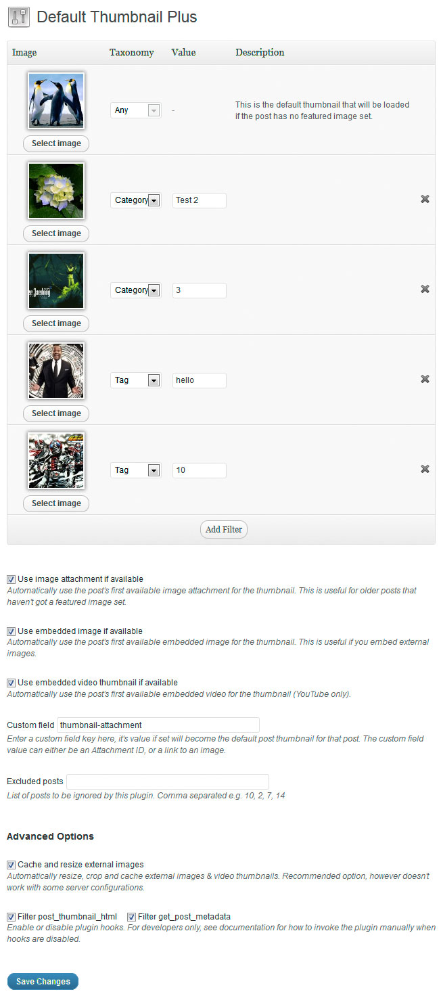

There are several benefits of adding thumbnails to your posts. It helps in decreasing bounce rate, increases traffic, gets attention of visitors easily, makes your site look professional etc.
When we start using WordPress, sometimes we don’t add thumbnails or we forget to do so. In such scenarios below guides will definitely help you out. There are several topics covered using different-2 methods so use the below navigation to read the guide you want to refer.
Navigation links
How to set first post image as default fallback for WordPress thumbnails
How to add a specific image as a default fallback (thumbnail)
How to Set the First Post Image as a Featured Image (or Post thumbnail) Automatically
WordPress Plugins to set default thumbnails
How to set first post image as default fallback for WordPress thumbnails
Generally, we use images in our post but we don’t add thumbnails or we forget to include them. In such scenarios the below code can be very useful as it fetches the very first image of the post and sets it as a thumbnail for that post. Consider a scenario wherein you have already published 100+ posts and later you want to have a thumbnail for each one of your post, in such case you must not prefer to edit each and every post just to add thumbnail rather you can use the below code, which does this job pretty well for you.
Place to use it: Copy the below code in functions.php file.
function default_image() {
$files = get_children('post_parent='.get_the_ID().'&post_type=attachment
&post_mime_type=image&order=desc');
if($files) :
$keys = array_reverse(array_keys($files));
$j=0;
$num = $keys[$j];
$image=wp_get_attachment_image($num, 'large', true);
$imagepieces = explode('"', $image);
$imagepath = $imagepieces[1];
$main=wp_get_attachment_url($num);
$template=get_template_directory();
$the_title=get_the_title();
print "<img src='$main' alt='$the_title' class='frame' />";
endif;
}
The above function would fetch the first image of every post.
The second step is to have the below code in each and every file which is using the thumbnails, it calls the above function if there is no thumbnail found on any of the posts. Copy the below code in every template, which is displaying the thumbnails.
For example: If you are displaying related posts thumbnails on every single post, also, you are having thumbnails in excerpt at the home page then you would need to add the below code in single.php (for every post) and home.php (for home page). Similarly you can include the below code in other templates if you are displaying the thumbnails there.
<?php if ( (function_exists('has_post_thumbnail')) && (has_post_thumbnail()) ) {
echo get_the_post_thumbnail($post->ID);
} else {
echo default_image();
} ?>
How to add a specific image as a default fallback (thumbnail)
Above we saw a method to set first image as default thumbnail but what if there is no image being used in the post at all. There are always few posts, which doesn’t have any images, for such kind of posts you can have a default fallback image which can work as a thumbnail for them. You can create an image for that, using your logo or site name etc.
The method is pretty simple. Add the below code in your theme template files single.php, home.php, loop.php, archive.php etc. wherever necessary.
<?php if ( has_post_thumbnail() ) {
the_post_thumbnail();
} else { ?>
<img src="<?php bloginfo('template_directory'); ?>/images/default-thumb-img.png"
alt="<?php the_title(); ?>" />
<?php } ?>
What the above code does?
It checks whether the post has thumbnails, if not it assigns the default-thumb-img.png ( Change it to your image name) as thumbnail for that particular post.
How to Set the First Post Image as a Featured Image (or Post thumbnail) Automatically
Post thumbnail is also known as featured image. The below piece of code can set featured image automatically for each of your post. There are cases when we publish number of posts with images but without featured images. In such cases, you may want to add the featured images for old posts. The below function not only sets the first image as a default featured image for old post but it does the same job for new posts too.
WordPress get post featured Image function: Copy the below code in functions.php file
/*function: generate featured image automatically*/
function autogen_featured_img() {
global $post;
if (!has_post_thumbnail($post->ID)) {
$attached_image =
get_children( "post_parent=$post->ID&post_type=attachment&post_mime_type=image&numberposts=1" );
if ($attached_image) {
foreach ($attached_image as $attachment_id => $attachment) {
set_post_thumbnail($post->ID, $attachment_id);
}
}
}
}
/*This line is used to generate featured images for all old
posts. Remove this once the default images get generated
for all of the old posts*/
add_action('the_post', 'autogen_featured_img');
/* For new upcoming posts, leave them permanently*/
add_action('save_post', 'autogen_featured_img');
add_action('draft_to_publish', 'autogen_featured_img');
add_action('new_to_publish', 'autogen_featured_img');
add_action('pending_to_publish', 'autogen_featured_img');
add_action('future_to_publish', 'autogen_featured_img');
What it does?
The function autogen_featured_img fetches the first post image and set it as a featured image if the post doesn’t have any already. The actions are to call this function on different conditions such as:
add_action(‘save_post’, ‘autogen_featured_img’) – It calls the function autogen_featured_img when the post is being saved as draft.
add_action(‘draft_to_publish’, ‘autogen_featured_img’) – Calls when a draft post has been published.
add_action(‘new_to_publish’, ‘autogen_featured_img’) – Calls when a newly written post is being published.
add_action(‘pending_to_publish’, ‘autogen_featured_img’) – When pending post is published.
WordPress Plugins to set default thumbnails
All the above methods require to add the few lines of code to your theme files, however if you are not sure how to do that then you always have these plugins, which can do the same thing.
Plugin 1: Default thumbnail plus
Using this plugin, you can do the following things:
1) Automatically display first post image as default thumbnail.
2) You can set a different post thumbnail for every category and tag.
3) Can add a custom field for thumbnail images.
Here is how the configuration page looks like for the plugin. Setting it up is pretty simple.

Plugin 2: Easy Add thumbnail
This plugin has less features compared to the above plugin. It just sets post image as thumbnail (or featured image) for that post if there is not the one existing. Use it if you only want this feature alone, otherwise the above plugin can be a good option for you.
Why we shared the manual code if there are plugins to do the same task?
Plugin can be outdated but the code doesn’t, sometimes they are not compatible with your themes. Also, using more plugins can slow down your site and reduce your site performance.
Final Words
Let us know if you face any issue while setting up any of the above code on your site. Using them you can very well add default thumbnail (featured image) and fallback image to your websites in WordPress.
Thanks for this post, the code to “generate featured image automatically” was exactly what I was looking for :-)
I activated the plugin but its not working. I also paste the code you gave above, but none worked. Am using the Blog-o-Folio Theme.
Did I Do Anything wrong?
Where exacly in functions.php will I paste the code?